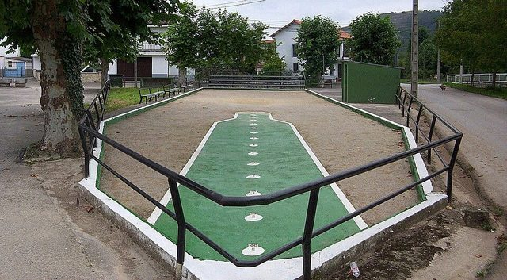

Home / Age of Contact and Craft / Mediterranean
Encyclopedia ID 1096
Cantabrian palm bowling
Also known as Bolo palma

Cantabrian bowling where a wooden ball is thrown at nine pins; deeply local with 16th-century records.
Heritage note
Part of the living heritage of Spain.
Origins
Usually placed in the era of Age of Contact and Craft (about 1500 to 1800), although its exact origins are uncertain, within the cultural world of Mediterranean.
Sources
Related entries


Venetian lagoon regatta
Italy · RacingTombola
Italy +1 · RacingMaghrebi 5x5 capture game
Libya · Board and table games
More from Spain


Bottle Dance
Paraguay +1 · Dances

Dry Stone Wall Builder
Croatia +4 · Crafts and making